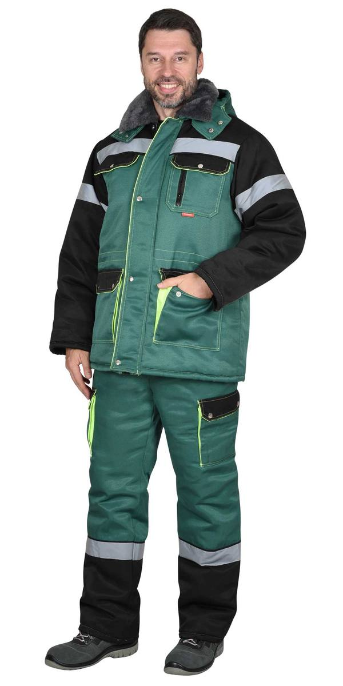
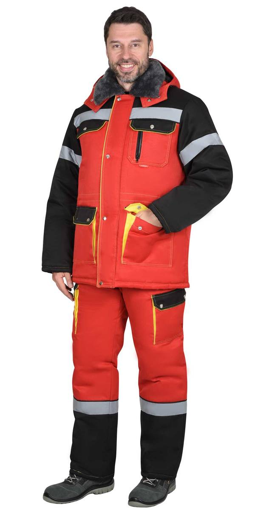
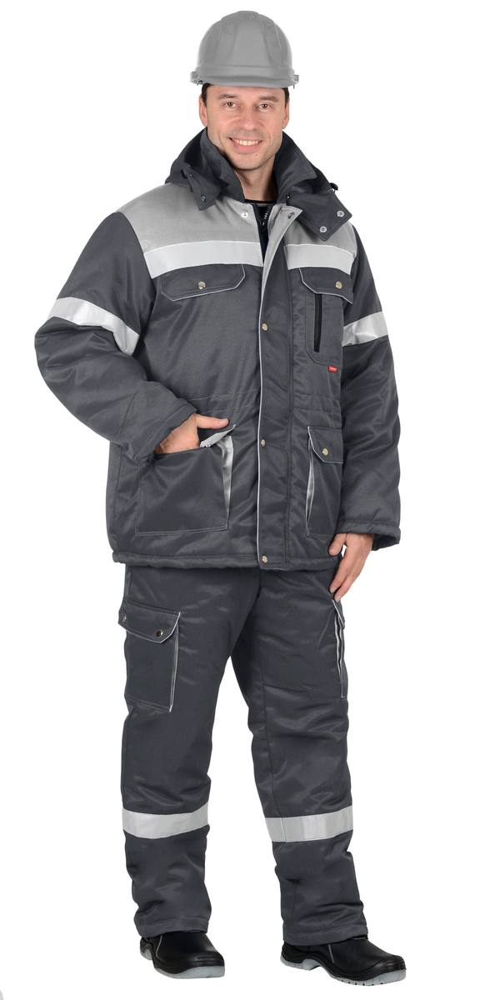
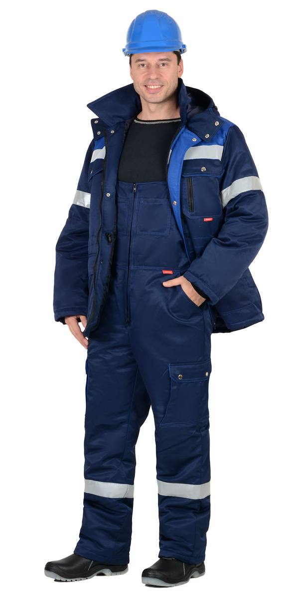
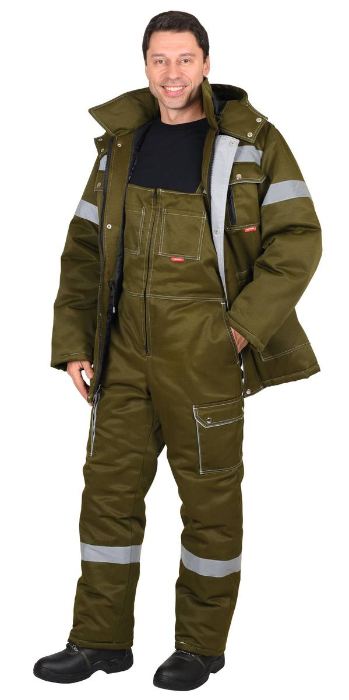
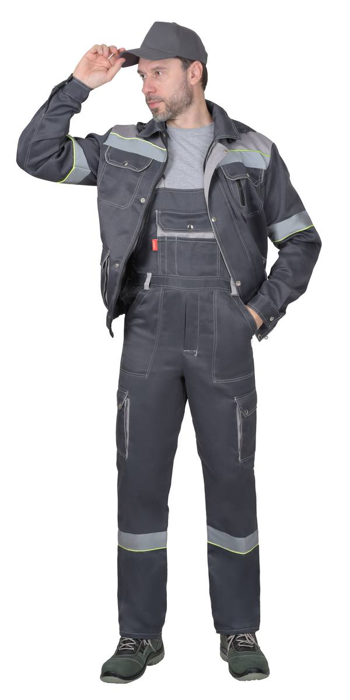
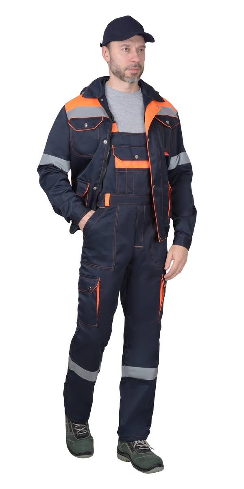

Костюм зим: куртка дл., п/к. красный с черным и СОП-50мм. тк. Гретта (ЧЗ)
Костюм зимний: куртка дл., п/комб. т.серый с серым и СОП-50мм. тк. Гретта (ЧЗ)
Костюм зимний: куртка дл., п/комб. т.синий с васильковым и СОП-50мм. тк. Гретта (ЧЗ)
Костюм зимний: куртка дл., п/комб. хаки и СОП-50мм. тк. Кроун240 (ЧЗ)(распродажа)
Костюм летний: куртка кор., п/к. т. серый со св. серым и СОП и лимонным кантом (ЧЗ)
Костюм : куртка кор., п/к. синий с оранжевым и СОП (ЧЗ)| Артикул | Вариант / цвет |
|---|---|
| 120714 | Костюм зим: куртка дл., п/к. зеленый с черным и СОП-50мм. тк. Гретта (ЧЗ) |
| 120715 | Костюм зим: куртка дл., п/к. красный с черным и СОП-50мм. тк. Гретта (ЧЗ) |
| 114594 | Костюм зимний: куртка дл., п/комб. т.серый с серым и СОП-50мм. тк. Гретта (ЧЗ) |
| 103032 | Костюм зимний: куртка дл., п/комб. т.синий с васильковым и СОП-50мм. тк. Гретта (ЧЗ) |
| 114961 | Костюм зимний: куртка дл., п/комб. хаки и СОП-50мм. тк. Кроун240 (ЧЗ)(распродажа) |
| 165083 | Костюм зимний: куртка дл., п/комб. черный с красным и СОП-50мм. Тк.Орион-мембрана (ЧЗ) |
| 2322 | Костюм зимний: куртка дл., п/комб. черный с красным и СОП-50мм. тк. Гретта (ЧЗ) |
| 110568 | Костюм летний: куртка кор., п/к. т. серый со св. серым и СОП и лимонным кантом (ЧЗ) |
| 121425 | Костюм : куртка кор., п/к. синий с оранжевым и СОП (ЧЗ) |
| 2312 | Костюм : куртка кор., п/комб. синий с васильковым и СОП (ЧЗ) |
| 4011 | Костюм : куртка кор., п/комб. хаки с СОП (ЧЗ) |
| 2310 | Костюм : куртка кор., п/комб. черный с красным с СОП (ЧЗ) |